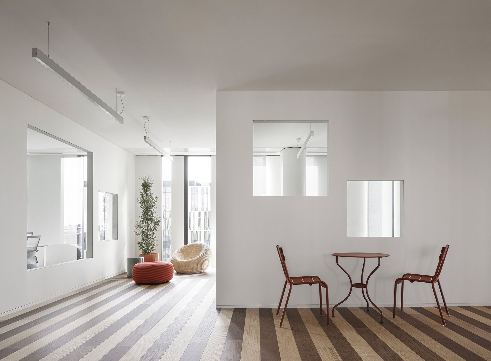

01 · I DATI
Perché esistono i database
I dati sono ovunque.
Nei social network troviamo profili,
post, like, commenti, follower e messaggi.
Nei servizi di streaming vengono memorizzati
utenti, film visti preferenze e cronologia.
Nell’e-commerce troviamo prodotti, carrelli,
pagamenti, ordini e spedizioni.
Ogni azione digitale lascia una traccia:
un dato che deve essere
memorizzato, protetto e recuperato
quando serve.